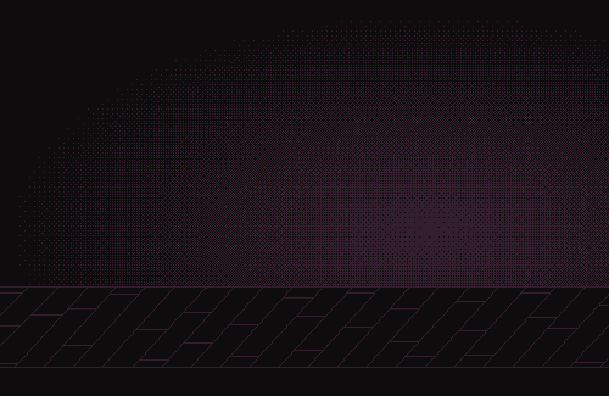
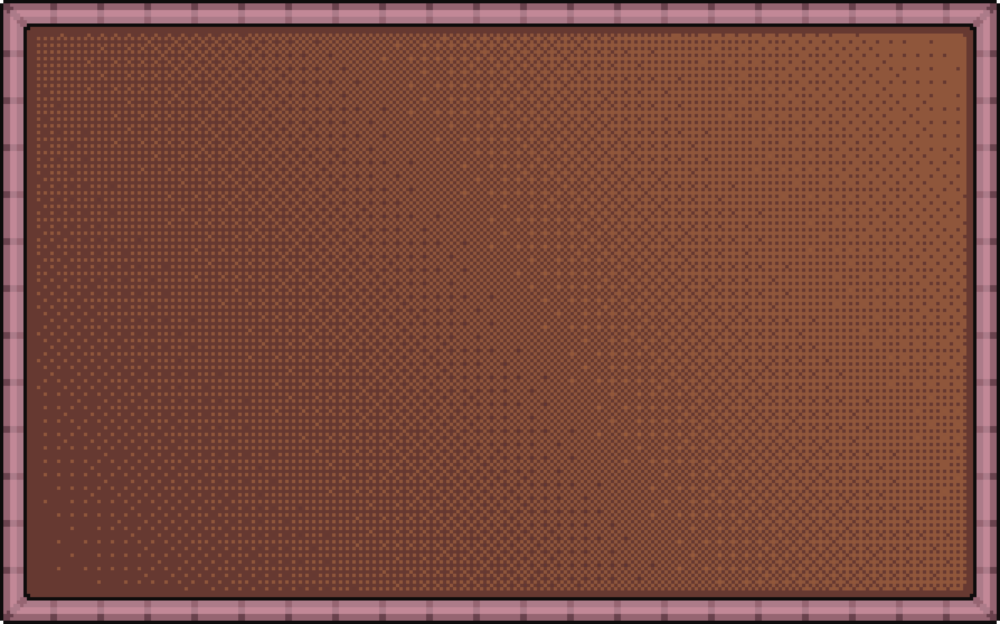
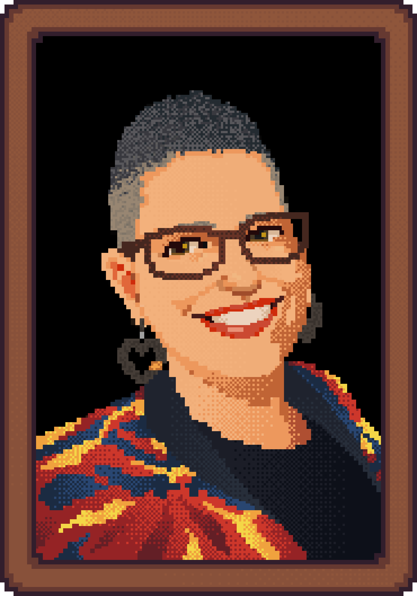
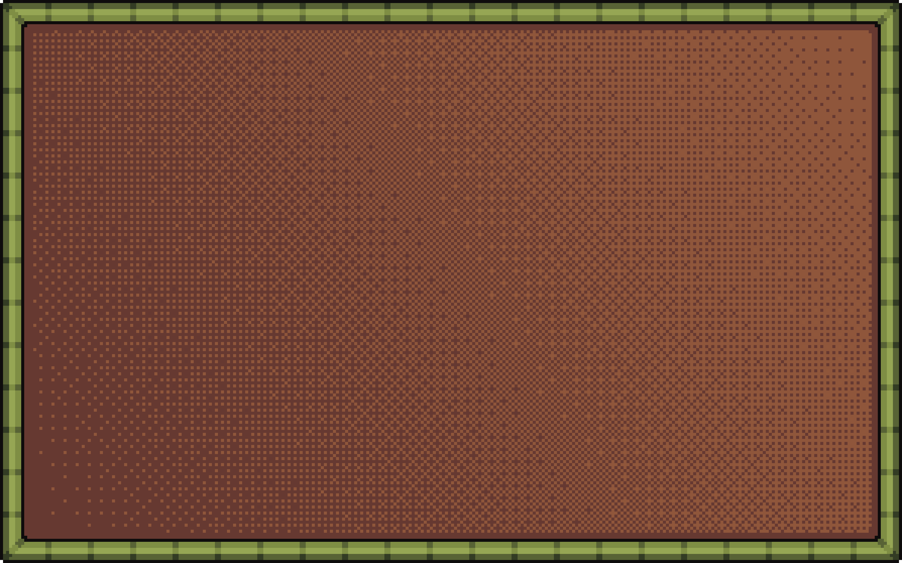
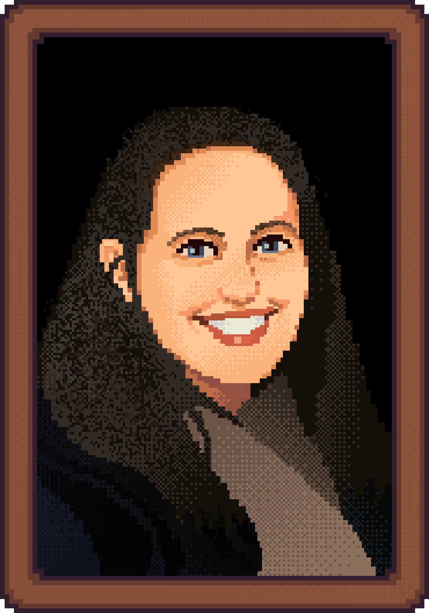
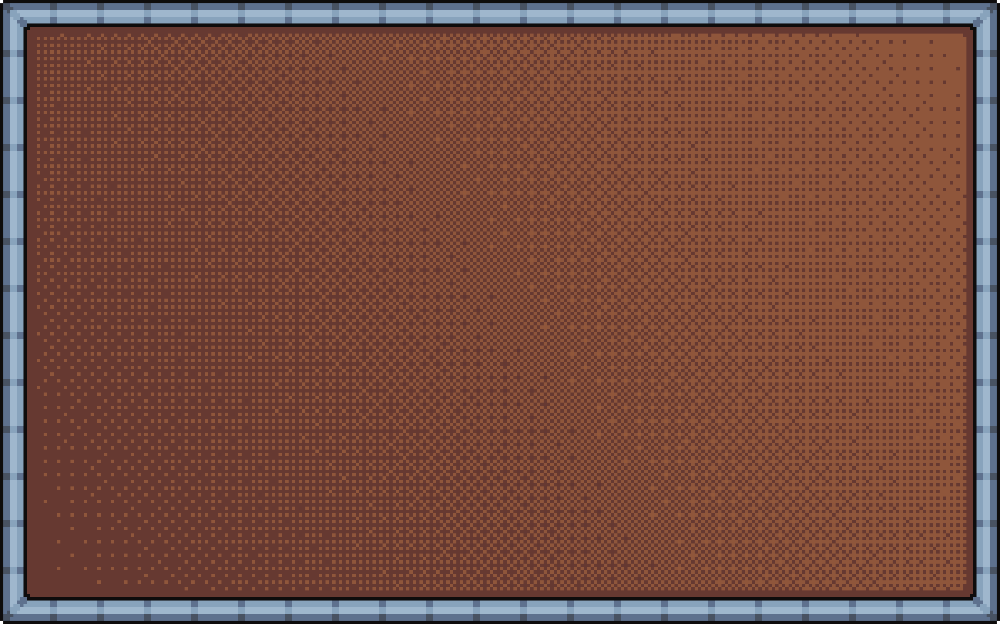
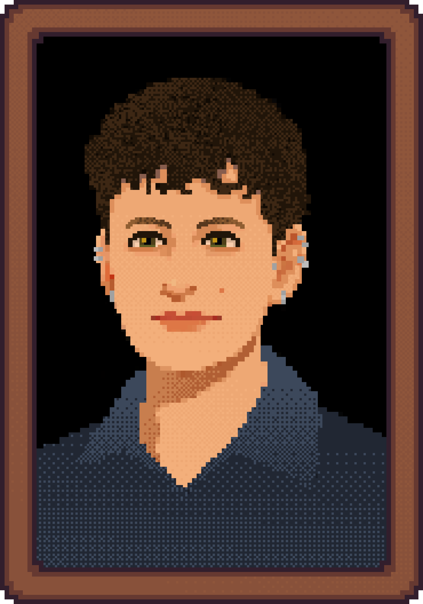

Vanessa Dion
Fletcher


Vanessa Dion
Fletcher
BIG Doll || Xwat Naaniitus
Bio
Vanessa Dion Fletcher is a Lenape and Potawatomi neurodiverse artist. Her family is from Eelūnaapèewii Lahkèewiitt and European settlers. She employs porcupine quills, Wampum belts, and menstrual blood to reveal the complexities of what defines a body physically and culturally. Reflecting on an Indigenous and gendered body with a neurodiverse mind, Dion Fletcher creates art using composite media, primarily working in performance, textiles, and video.
Talk
BIG Doll || Xwat Naaniitus is an exhibition that shows the process of making and creating from the heart, not the head. This exhibition is both profoundly personal and collaborative, open to audiences of all ages to participate in the design of an artwork.
Kelsey Pugh


Kelsey Pugh
Reconstructing Ancient Faces
Bio
Kelsey Pugh is a paleoanthropologist studying ape and human evolution from the fossil record. She uses methods including comparative anatomy, phylogenetics, and 3D geometric morphometrics to address questions about the last common ancestor of apes and humans.
Talk
Relatively complete fossils of hominoids are rare discoveries, and those that are known have often been distorted or damaged. This talk looks at how virtual reconstruction can help correct that damage, using the 12-million-year-old ape Pierolapithecus as an example.
Anna Stielau


Anna Stielau
Arts of Darkness: Rethinking Photography from South Africa
Bio
Anna Stielau is an assistant professor of art history and visual culture at OCADU. She received her PhD from NYU’s Department of Media, Culture, and Communication and previously served as the Weisman Postdoctoral Teaching Fellow in Visual Culture at Caltech.
Talk
Photography is an infrastructural art. It needs light, power, and water. In South Africa, where rolling blackouts and water shortages are routine, those resources cannot be taken for granted. Anna shares work exploring how artists are working within, and thinking through, those constraints.